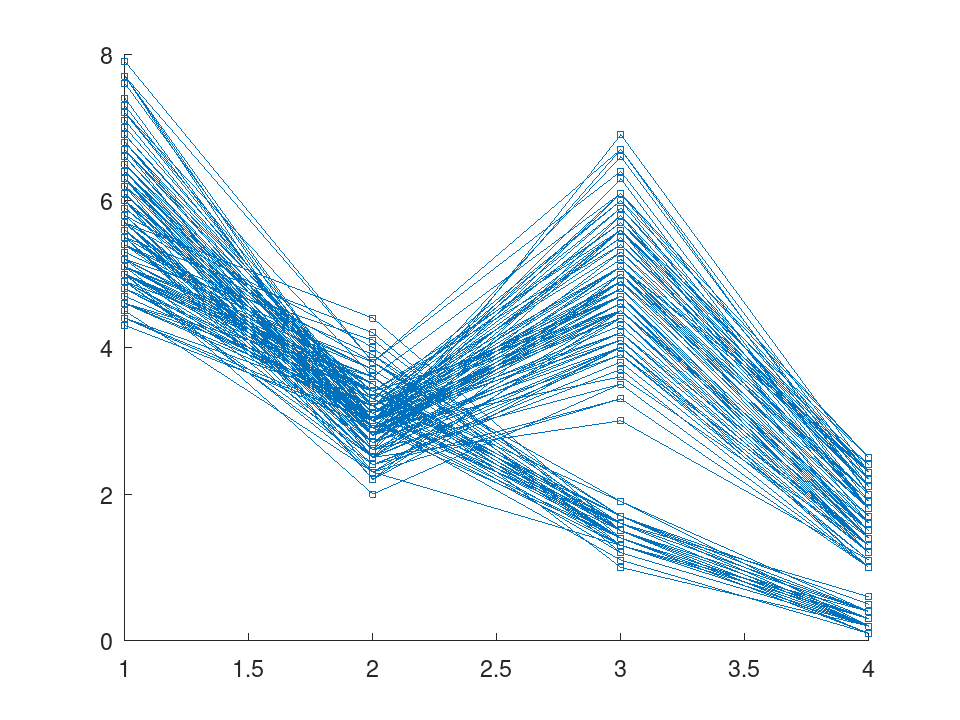
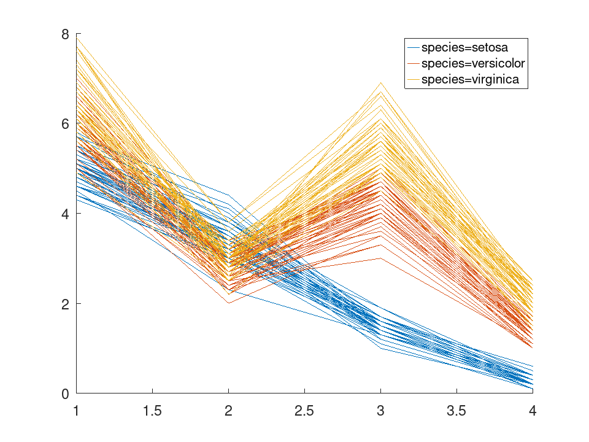
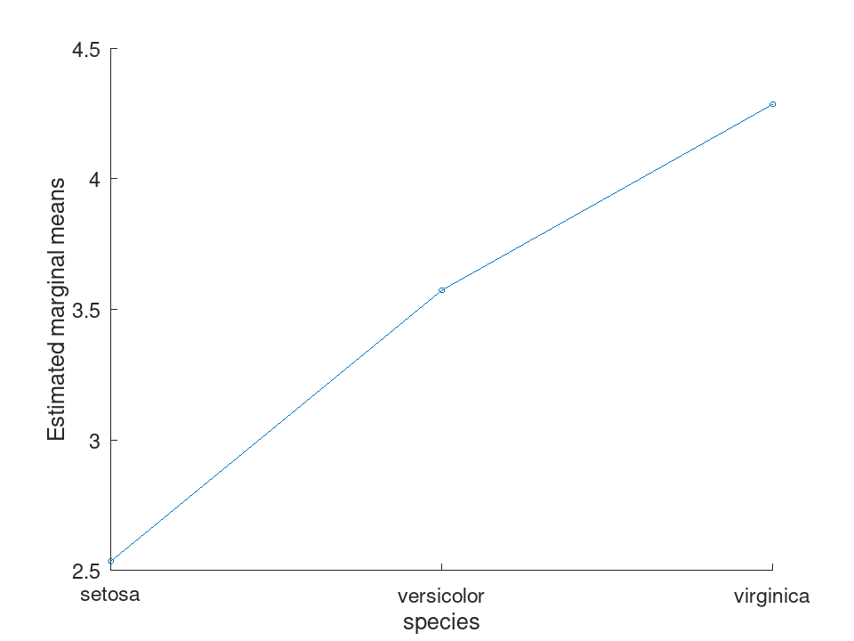
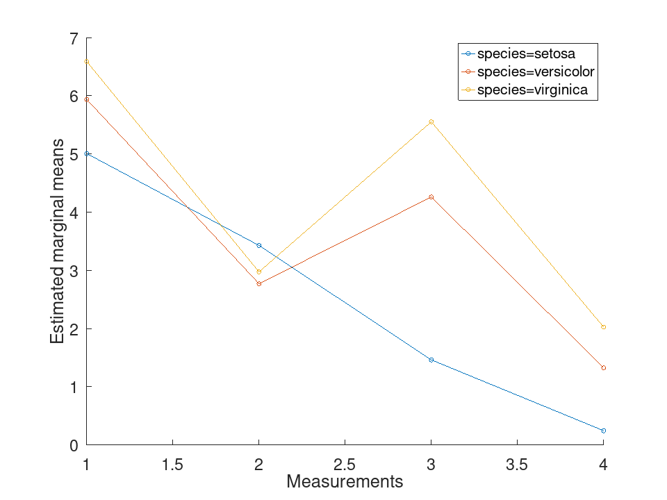

RepeatedMeasuresModel
statistics: RepeatedMeasuresModel
Repeated measures model.
A RepeatedMeasuresModel object holds a multivariate linear model
of several responses measured on the same subjects, the repeated
measures, on between-subject predictors. Each row of the data is a
subject and each response a measurement taken on it; the between-subject
model describes how the mean of every response depends on the
predictors, and the within-subject design describes how the responses
relate to one another, as the levels of one or more within-subject
factors.
The between-subject coefficients are estimated by least squares, one
column per response, with categorical predictors in effects coding: a
predictor of L levels contributes L - 1 columns named
name_level, the last level coded -1 in all of them.
ranova tests the within-subject effects, reporting the p-values
corrected for departures from sphericity beside the uncorrected ones,
epsilon gives those corrections and mauchly tests
sphericity itself.
Create a RepeatedMeasuresModel object with fitrm.
See also: fitrm, anova2, manova1
Source Code: RepeatedMeasuresModel
The RepeatedMeasuresModel class contains the following properties:
The table the model was fitted to, one row per subject, responses included. A subject missing a response or a predictor is kept here, although the fit leaves it out. This property is read-only.
A character vector holding the right side of the model formula, with
its intercept, as in '1 + species'. This property is
read-only.
A cell row of character vectors naming the variables the between-subject model draws on, empty for a model with an intercept alone. This property is read-only.
A cell row of character vectors naming the repeated measures, in the
order of the columns of Coefficients. This property is
read-only.
A table with one row per response, named by the responses, and one
variable per within-subject factor. Without a design given at fitting
it holds a single factor Time of the values 1 to k for
k responses. This property is read-only.
'separatemeans', 'orthogonalcontrasts', a formula over
the within-subject factors or a contrast matrix, as given at fitting.
This property is read-only.
A cell row of character vectors, the variable names of
WithinDesign. This property is read-only.
A table with one row per coefficient, named after the terms of the between-subject model, and one variable per response. This property is read-only.
A table holding the covariance of the residuals of the responses,
their cross products over DFE, with rows and variables named by
the responses. This property is read-only.
The number of subjects the fit used less the number of between-subject coefficients. This property is read-only.
The RepeatedMeasuresModel class offers the following public methods:
RepeatedMeasuresModel: rm = RepeatedMeasuresModel (t, modelspec)
RepeatedMeasuresModel: rm = RepeatedMeasuresModel (t, modelspec, name, value)
rm = RepeatedMeasuresModel (t, modelspec) fits
the repeated measures in the table t on the between-subject
model given by the formula modelspec, a character vector or a
string scalar of the form 'responses ~ terms'.
The responses are a range of the table’s variables, as in
'y1-y6', which takes every variable from y1 to
y6 in the table’s order, a comma list, as in
'y1,y2,y3', or both. The terms are a Wilkinson formula over the
other variables, as in 'species' or 'g*x', or
'1' for an intercept alone. A categorical, logical,
text or string variable is a categorical predictor and any other a
continuous one.
A subject missing a response or a predictor is left out of the fit.
The following name-value arguments are accepted.
| Name | Value |
|---|---|
'WithinDesign' | The design of the within-subject
factors: a table with one row per response and one variable per factor,
or a numeric vector with one element per response, which becomes a
single factor Time. The default is Time holding the
values 1 to k for k responses. |
'WithinModel' | The within-subject model:
'separatemeans', the default, which compares the means of the
responses; 'orthogonalcontrasts', which tests the orthogonal
polynomial trends over a single numeric within-subject factor; a
formula over the within-subject factors, as in 'A*B'; or a
contrast matrix with one row per response. |
'orthogonalcontrasts' is refused at fitting unless the
within-subject design holds a single numeric factor. MATLAB accepts
the fit and refuses the model only when a test is asked of it.
See also: fitrm
RepeatedMeasuresModel: tbl = ranova (rm)
RepeatedMeasuresModel: tbl = ranova (rm, 'WithinModel', WM)
RepeatedMeasuresModel: [tbl, A, C, D] = ranova (…)
tbl = ranova (rm) tests the within-subject effects of
the repeated measures model rm: whether the means of the
responses differ, and whether each between-subject term changes that
difference. tbl holds one row per test and one per error term,
with the variables SumSq, DF, MeanSq, F
and pValue, and beside them the p-values under the
Greenhouse-Geisser, Huynh-Feldt and lower bound corrections for
departures from sphericity, pValueGG, pValueHF and
pValueLB. The corrections are reported and never applied.
ranova (rm, tests the
within-subject model WM instead, which takes the forms the
'WithinModel', WM)'WithinModel' argument of fitrm takes. The default is
'separatemeans' whatever the model was fitted with, as in
MATLAB. Under 'separatemeans' or a contrast matrix the rows
are named after the within-subject factor, or Time when there
are several. A formula or 'orthogonalcontrasts' gives one
block of rows per within-subject term, the constant term first, whose
tests are the between-subject tests of the mean of the responses.
[tbl, A, C, D] = ranova (…) also
returns the hypothesis of each test as A B C = D: A a cell
column holding the between-subject hypothesis matrix of each term,
C the within-subject contrast, a cell row of one per term when
there are several, and D zero.
'orthogonalcontrasts' works here where MATLAB R2024a and R2026a
both fail inside ranova; its results agree with those of
MATLAB’s anova for the same contrasts.
See also: fitrm, RepeatedMeasuresModel.epsilon, RepeatedMeasuresModel.mauchly
load fisheriris
t = table (species, meas(:,1), meas(:,2), meas(:,3), meas(:,4), ...
'VariableNames', {'species', 'meas1', 'meas2', 'meas3', 'meas4'});
Meas = table ([1, 2, 3, 4]', 'VariableNames', {'Measurements'});
rm = fitrm (t, 'meas1-meas4 ~ species', 'WithinDesign', Meas);
The corrected p-values sit beside the uncorrected ones; mauchly says whether the correction is needed and epsilon how large it is
ranova (rm)
ans =
3x8 table
SumSq DF MeanSq F pValue pValueGG pValueHF pValueLB
_______ ___ _________ _______ ____________ ____________ ____________ ____________
(Intercept):Measurements 1656.26 3 552.088 6873.29 0 9.44912e-279 2.9213e-283 2.58715e-125
species:Measurements 282.466 6 47.0777 586.1 1.42714e-206 4.93131e-156 1.54056e-158 9.01515e-71
Error(Measurements) 35.4227 441 0.0803237 NaN NaN NaN NaN NaN
mauchly (rm)
ans =
1x4 table
W ChiStat DF pValue
________ _______ __ ___________
0.558144 84.9762 5 7.61488e-17
epsilon (rm)
ans =
1x4 table
Uncorrected GreenhouseGeisser HuynhFeldt LowerBound
___________ _________________ __________ __________
1 0.75179 0.764092 0.333333
load fisheriris
t = table (species, meas(:,1), meas(:,2), meas(:,3), meas(:,4), ...
'VariableNames', {'species', 'meas1', 'meas2', 'meas3', 'meas4'});
Meas = table ([1, 2, 3, 4]', 'VariableNames', {'Measurements'});
rm = fitrm (t, 'meas1-meas4 ~ species', 'WithinDesign', Meas);
One block of rows per polynomial degree, the between-subject tests of the mean first
ranova (rm, 'WithinModel', 'orthogonalcontrasts')
ans =
12x8 table
SumSq DF MeanSq F pValue pValueGG pValueHF pValueLB
________ ___ _________ _______ ____________ ____________ ____________ ____________
(Intercept) 7201.66 1 7201.66 19650.1 2.07354e-158 2.07354e-158 2.07354e-158 2.07354e-158
species 309.607 2 154.803 422.39 1.15165e-61 1.15165e-61 1.15165e-61 1.15165e-61
Error 53.8746 147 0.366494 NaN NaN NaN NaN NaN
(Intercept):Measurements 1313.01 1 1313.01 14029.1 9.51133e-148 9.51133e-148 9.51133e-148 9.51133e-148
species:Measurements 35.9781 2 17.989 192.207 9.51777e-42 9.51777e-42 9.51777e-42 9.51777e-42
Error(Measurements) 13.758 147 0.0935922 NaN NaN NaN NaN NaN
(Intercept):Measurements^2 1.93802 1 1.93802 62.7528 5.31247e-13 5.31247e-13 5.31247e-13 5.31247e-13
species:Measurements^2 0.469633 2 0.234817 7.60335 0.000720725 0.000720725 0.000720725 0.000720725
Error(Measurements^2) 4.53985 147 0.0308833 NaN NaN NaN NaN NaN
(Intercept):Measurements^3 341.314 1 341.314 2929.84 5.62469e-99 5.62469e-99 5.62469e-99 5.62469e-99
species:Measurements^3 246.019 2 123.009 1055.91 6.12904e-88 6.12904e-88 6.12904e-88 6.12904e-88
Error(Measurements^3) 17.1248 147 0.116496 NaN NaN NaN NaN NaN
RepeatedMeasuresModel: tbl = epsilon (rm)
RepeatedMeasuresModel: tbl = epsilon (rm, C)
tbl = epsilon (rm) returns the corrections for
departures from sphericity that ranova applies to its
p-values, over the contrasts between successive responses: the
variables Uncorrected, which is 1, GreenhouseGeisser,
HuynhFeldt and LowerBound. The Huynh-Feldt value is
Lecoutre’s corrected form, capped at 1, and the lower bound is
1 / p for p contrasts.
tbl = epsilon (rm, C) computes them over the
contrast matrix C, which must have one row per response.
See also: fitrm, RepeatedMeasuresModel.ranova, RepeatedMeasuresModel.mauchly
RepeatedMeasuresModel: tbl = mauchly (rm)
RepeatedMeasuresModel: tbl = mauchly (rm, C)
tbl = mauchly (rm) tests whether the covariance of
the contrasts between successive responses is a multiple of the
identity, the sphericity that the uncorrected p-values of
ranova assume. tbl holds Mauchly’s W, the
chi-square statistic ChiStat with Bartlett’s factor, its
degrees of freedom DF and the pValue. A singular
covariance gives W 0, ChiStat Inf and a p-value of
0.
tbl = mauchly (rm, C) tests the contrasts of
the matrix C, which must have one row per response.
See also: fitrm, RepeatedMeasuresModel.ranova, RepeatedMeasuresModel.epsilon
RepeatedMeasuresModel: tbl = anova (rm)
RepeatedMeasuresModel: tbl = anova (rm, 'WithinModel', WM)
tbl = anova (rm) tests the between-subject terms of
the repeated measures model rm on the average of the repeated
measures, one univariate analysis of variance. tbl has the
variables Within, the within-subject response analysed,
Between, the between-subject term tested or Error,
SumSq, DF, MeanSq, F and
pValue. The intercept is named constant.
anova (rm, analyses
other responses built from the repeated measures, one block of rows
each:
'WithinModel', WM)
'separatemeans', the default: the average, named
Constant.
'orthogonalcontrasts': the average and the orthogonal
polynomial trends over a single numeric within-subject factor.
Contrast1, Contrast2, …
MATLAB R2024a and R2026a fail on 'separatemeans' given
explicitly, though it is their documented default; here it is the
default.
See also: fitrm, RepeatedMeasuresModel.ranova, RepeatedMeasuresModel.manova
RepeatedMeasuresModel: tbl = manova (rm)
RepeatedMeasuresModel: tbl = manova (rm, name, value)
RepeatedMeasuresModel: [tbl, A, C, D] = manova (…)
tbl = manova (rm) tests every term of the
within-subject model of rm, as it was fitted, against every
between-subject term, by the four multivariate statistics. tbl
has the variables Within, Between, Statistic,
one of Pillai, Wilks, Hotelling and
Roy, its Value, the F statistic that
approximates it, RSquare, the degrees of freedom df1
and df2, and the pValue. Under
'separatemeans' the within-subject hypothesis is that of equal
means, named Constant, and a contrast matrix is named
Specified contrast.
The name-value arguments are 'WithinModel', which takes the
forms fitrm takes but 'orthogonalcontrasts', and
'By', the name of a between-subject factor, which tests the
within-subject hypotheses at each of its levels in place of the
between-subject terms.
[tbl, A, C, D] = manova (…) also
returns the hypotheses as A B C = D: A a cell column of
the between-subject hypothesis matrices, C the within-subject
contrast, a cell row of one per term when there are several, and
D zero.
Pillai’s trace, Wilks’ lambda and Roy’s root are approximated by F as in MATLAB. The Hotelling-Lawley trace uses McKeon’s F approximation with its own second degrees of freedom, as SAS does, and the Pillai-Samson one where McKeon’s is undefined. MATLAB R2024a computes McKeon’s F but refers it to the Pillai-Samson degrees of freedom, which makes its p-values too small.
See also: fitrm, RepeatedMeasuresModel.coeftest, RepeatedMeasuresModel.ranova
RepeatedMeasuresModel: tbl = coeftest (rm, A, C)
RepeatedMeasuresModel: tbl = coeftest (rm, A, C, D)
tbl = coeftest (rm, A, C) tests the
hypothesis A B C = 0 on the coefficient matrix B of
rm, A having one column per between-subject coefficient
and C one row per response. tbl holds the four
multivariate statistics as manova reports them: the variables
Statistic, Value, F, RSquare,
df1, df2 and pValue.
tbl = coeftest (rm, A, C, D) tests
A B C = D instead, D a scalar or a matrix with as many
rows as A and as many columns as C. The default is 0.
See also: fitrm, RepeatedMeasuresModel.manova
RepeatedMeasuresModel: tbl = margmean (rm, vars)
RepeatedMeasuresModel: tbl = margmean (rm, vars, 'Alpha', alpha)
tbl = margmean (rm, vars) estimates the mean
of the repeated measures at each combination of the levels of the
factors named by vars, a character vector or a cell array of
them, each a categorical between-subject factor or a within-subject
factor. The other between-subject factors are averaged over their
levels with equal weights, a continuous predictor is held at its mean
over the subjects the fit used, and the responses are averaged over
the other within-subject factors. tbl holds one variable per
factor, the first varying slowest, and Mean, StdErr,
Lower and Upper, the limits of a 100 (1 -
alpha) per cent confidence interval on DFE degrees of freedom.
The default alpha is 0.05.
See also: fitrm, RepeatedMeasuresModel.multcompare, RepeatedMeasuresModel.grpstats
RepeatedMeasuresModel: tbl = grpstats (rm, g)
RepeatedMeasuresModel: tbl = grpstats (rm, g, stats)
tbl = grpstats (rm, g) pools the repeated
measures of every subject and summarizes them at each combination of
the levels of the factors named by g, a character vector or a
cell array of them, each a categorical between-subject factor or a
within-subject factor. tbl holds one variable per factor,
GroupCount, the number of values in the group, and their
mean and std.
tbl = grpstats (rm, g, stats) computes
the statistics named by stats instead, a character vector or a
cell array of them, each one of 'mean', 'median',
'std', 'var', 'sem', 'min',
'max', 'range' and 'numel'. Missing values are
left out.
See also: fitrm, RepeatedMeasuresModel.margmean
RepeatedMeasuresModel: tbl = multcompare (rm, var)
RepeatedMeasuresModel: tbl = multcompare (rm, var, name, value)
tbl = multcompare (rm, var) compares the
estimated marginal means of every pair of levels of the factor
var, a categorical between-subject factor or a within-subject
factor, as margmean estimates them. tbl holds one row per
ordered pair, with the variables var_1 and
var_2, Difference, StdErr, the adjusted
pValue, and Lower and Upper, the limits of the
simultaneous confidence interval.
The name-value arguments are:
| Name | Value |
|---|---|
'By' | The name of another factor; the comparisons are made at each of its levels, which become the first variable of tbl. |
'ComparisonType' | 'tukey-kramer', the
default, 'bonferroni', 'dunn-sidak', 'lsd' or
'scheffe'. |
'Alpha' | The significance level of the intervals. The default is 0.05. |
The Tukey-Kramer p-values and limits come from the studentized range
distribution, stdrcdf and stdrinv. MATLAB R2024a and
R2026a floor their Tukey-Kramer p-values, 9.56e-10 over three groups
whatever the difference, and R2024a’s Dunn-Sidak p-values read 0 where
the Bonferroni ones are near 1e-36; both are computed here.
See also: fitrm, RepeatedMeasuresModel.margmean, stdrcdf
load fisheriris
t = table (species, meas(:,1), meas(:,2), meas(:,3), meas(:,4), ...
'VariableNames', {'species', 'meas1', 'meas2', 'meas3', 'meas4'});
rm = fitrm (t, 'meas1-meas4 ~ species');
Every ordered pair of species, on the mean of the four measurements, with Tukey-Kramer p-values and simultaneous limits
multcompare (rm, 'species')
ans =
6x7 table
species_1 species_2 Difference StdErr pValue Lower Upper
______________ ______________ __________ _________ ___________ _________ _________
{'setosa' } {'versicolor'} -1.0375 0.0605388 2.1597e-36 -1.18084 -0.894163
{'setosa' } {'virginica' } -1.7495 0.0605388 5.03902e-62 -1.89284 -1.60616
{'versicolor'} {'setosa' } 1.0375 0.0605388 2.1597e-36 0.894163 1.18084
{'versicolor'} {'virginica' } -0.712 0.0605388 1.90312e-22 -0.855337 -0.568663
{'virginica' } {'setosa' } 1.7495 0.0605388 5.03902e-62 1.60616 1.89284
{'virginica' } {'versicolor'} 0.712 0.0605388 1.90312e-22 0.568663 0.855337
load fisheriris
t = table (species, meas(:,1), meas(:,2), meas(:,3), meas(:,4), ...
'VariableNames', {'species', 'meas1', 'meas2', 'meas3', 'meas4'});
Meas = table ([1, 2, 3, 4]', 'VariableNames', {'Measurements'});
rm = fitrm (t, 'meas1-meas4 ~ species', 'WithinDesign', Meas);
By repeats the comparison of the measurements for each species, here with Bonferroni's adjustment
multcompare (rm, 'Measurements', 'By', 'species', ...
'ComparisonType', 'bonferroni')
ans =
36x8 table
species Measurements_1 Measurements_2 Difference StdErr pValue Lower Upper
______________ ______________ ______________ __________ _________ ____________ ________ _________
{'setosa' } 1 2 1.578 0.0624426 1.37759e-54 1.411 1.745
{'setosa' } 1 3 3.544 0.0479932 2.55816e-117 3.41565 3.67235
{'setosa' } 1 4 4.76 0.0678361 3.77851e-114 4.57858 4.94142
{'setosa' } 2 1 -1.578 0.0624426 1.37759e-54 -1.745 -1.411
{'setosa' } 2 3 1.966 0.0616585 3.8357e-67 1.8011 2.1309
{'setosa' } 2 4 3.182 0.04286 1.18504e-117 3.06737 3.29663
{'setosa' } 3 1 -3.544 0.0479932 2.55816e-117 -3.67235 -3.41565
{'setosa' } 3 2 -1.966 0.0616585 3.8357e-67 -2.1309 -1.8011
{'setosa' } 3 4 1.216 0.0532426 1.97816e-49 1.07361 1.35839
{'setosa' } 4 1 -4.76 0.0678361 3.77851e-114 -4.94142 -4.57858
{'setosa' } 4 2 -3.182 0.04286 1.18504e-117 -3.29663 -3.06737
{'setosa' } 4 3 -1.216 0.0532426 1.97816e-49 -1.35839 -1.07361
{'versicolor'} 1 2 3.166 0.0624426 3.09742e-94 2.999 3.333
{'versicolor'} 1 3 1.676 0.0479932 2.81918e-72 1.54765 1.80435
{'versicolor'} 1 4 4.61 0.0678361 3.63727e-112 4.42858 4.79142
{'versicolor'} 2 1 -3.166 0.0624426 3.09742e-94 -3.333 -2.999
{'versicolor'} 2 3 -1.49 0.0616585 2.78703e-52 -1.6549 -1.3251
{'versicolor'} 2 4 1.444 0.04286 3.0732e-70 1.32937 1.55863
{'versicolor'} 3 1 -1.676 0.0479932 2.81918e-72 -1.80435 -1.54765
{'versicolor'} 3 2 1.49 0.0616585 2.78703e-52 1.3251 1.6549
{'versicolor'} 3 4 2.934 0.0532426 2.74255e-99 2.79161 3.07639
{'versicolor'} 4 1 -4.61 0.0678361 3.63727e-112 -4.79142 -4.42858
{'versicolor'} 4 2 -1.444 0.04286 3.0732e-70 -1.55863 -1.32937
{'versicolor'} 4 3 -2.934 0.0532426 2.74255e-99 -3.07639 -2.79161
{'virginica' } 1 2 3.614 0.0624426 2.77463e-102 3.447 3.781
{'virginica' } 1 3 1.036 0.0479932 1.18915e-46 0.907645 1.16435
{'virginica' } 1 4 4.562 0.0678361 1.61548e-111 4.38058 4.74342
{'virginica' } 2 1 -3.614 0.0624426 2.77463e-102 -3.781 -3.447
{'virginica' } 2 3 -2.578 0.0616585 1.00903e-82 -2.7429 -2.4131
{'virginica' } 2 4 0.948 0.04286 7.65772e-48 0.833374 1.06263
{'virginica' } 3 1 -1.036 0.0479932 1.18915e-46 -1.16435 -0.907645
{'virginica' } 3 2 2.578 0.0616585 1.00903e-82 2.4131 2.7429
{'virginica' } 3 4 3.526 0.0532426 1.43828e-110 3.38361 3.66839
{'virginica' } 4 1 -4.562 0.0678361 1.61548e-111 -4.74342 -4.38058
{'virginica' } 4 2 -0.948 0.04286 7.65772e-48 -1.06263 -0.833374
{'virginica' } 4 3 -3.526 0.0532426 1.43828e-110 -3.66839 -3.38361
RepeatedMeasuresModel: ypred = predict (rm)
RepeatedMeasuresModel: ypred = predict (rm, tnew)
RepeatedMeasuresModel: ypred = predict (…, name, value)
RepeatedMeasuresModel: [ypred, yci] = predict (…)
ypred = predict (rm, tnew) returns the
predicted repeated measures of the subjects in the table tnew,
one row each, from their between-subject predictors. tnew
defaults to BetweenDesign. A subject missing a predictor, or
holding a level the model was not fitted on, is predicted as
NaN.
Under 'separatemeans' the prediction is one column per
response. Under any other within-subject model the means are smoothed
through that model: projected onto the terms of a formula, or onto the
polynomial of 'orthogonalcontrasts', and evaluated at the
within-subject design, which may then be a new one.
The name-value arguments are 'WithinDesign', the within-subject
design to predict at, as fitrm takes it; 'WithinModel',
the within-subject model, by default the one fitted; and
'Alpha', the significance level of the intervals, 0.05 by
default. Under 'separatemeans' a new within-subject design is
ignored with a warning, as in MATLAB.
[ypred, yci] = predict (…) also returns the
confidence limits of the predicted means as an array of the size of
ypred by 2, the lower limits first.
See also: fitrm, RepeatedMeasuresModel.random
RepeatedMeasuresModel: ysim = random (rm)
RepeatedMeasuresModel: ysim = random (rm, tnew)
ysim = random (rm, tnew) draws one set of
repeated measures for each subject of the table tnew, from a
normal distribution with the subject’s predicted means and the
estimated covariance Covariance. tnew defaults to
BetweenDesign. A subject missing a predictor gets a row of
NaN.
See also: fitrm, RepeatedMeasuresModel.predict, mvnrnd
RepeatedMeasuresModel: h = plot (rm)
RepeatedMeasuresModel: h = plot (rm, name, value)
plot (rm) draws one line per subject of
BetweenDesign through its repeated measures, against the
positions 1 to k of the k responses, and returns the
column of line handles h.
The name-value arguments are 'Group', the name of a
categorical between-subject factor or a cell array of them, which
colours the lines by group and adds a legend with one entry per group;
'Marker', the marker, 's' by default; and
'LineStyle', the line style, '-' by default.
See also: fitrm, RepeatedMeasuresModel.plotprofile
load fisheriris
t = table (species, meas(:,1), meas(:,2), meas(:,3), meas(:,4), ...
'VariableNames', {'species', 'meas1', 'meas2', 'meas3', 'meas4'});
rm = fitrm (t, 'meas1-meas4 ~ species');
One line per flower through its four measurements
plot (rm);

load fisheriris
t = table (species, meas(:,1), meas(:,2), meas(:,3), meas(:,4), ...
'VariableNames', {'species', 'meas1', 'meas2', 'meas3', 'meas4'});
rm = fitrm (t, 'meas1-meas4 ~ species');
Group colours the lines by species, so a profile that one species follows and the others do not stands out
plot (rm, 'Group', 'species', 'Marker', 'none');

RepeatedMeasuresModel: h = plotprofile (rm, X)
RepeatedMeasuresModel: h = plotprofile (rm, X, name, value)
plotprofile (rm, X) draws the estimated marginal
means of margmean over the levels of the factor X, a
categorical between-subject factor or a within-subject factor, and
returns the line handles h. A numeric within-subject factor is
drawn at its values; any other at the positions 1 to L of its
L levels, labelled with them.
The name-value arguments are 'Group', the name of another
factor, which draws one line per level of it and adds a legend;
'Marker', 'o' by default; and 'LineStyle',
'-' by default.
See also: fitrm, RepeatedMeasuresModel.margmean, RepeatedMeasuresModel.plot
load fisheriris
t = table (species, meas(:,1), meas(:,2), meas(:,3), meas(:,4), ...
'VariableNames', {'species', 'meas1', 'meas2', 'meas3', 'meas4'});
rm = fitrm (t, 'meas1-meas4 ~ species');
The mean over the four measurements, one point per species
plotprofile (rm, 'species');

load fisheriris
t = table (species, meas(:,1), meas(:,2), meas(:,3), meas(:,4), ...
'VariableNames', {'species', 'meas1', 'meas2', 'meas3', 'meas4'});
Meas = table ([1, 2, 3, 4]', 'VariableNames', {'Measurements'});
rm = fitrm (t, 'meas1-meas4 ~ species', 'WithinDesign', Meas);
Lines that are not parallel are what ranova reports as the interaction of species with the measurements
plotprofile (rm, 'Measurements', 'Group', 'species');
